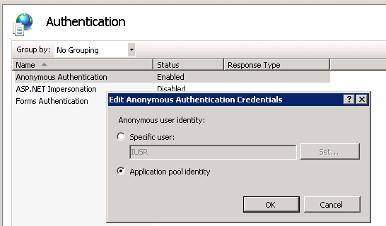
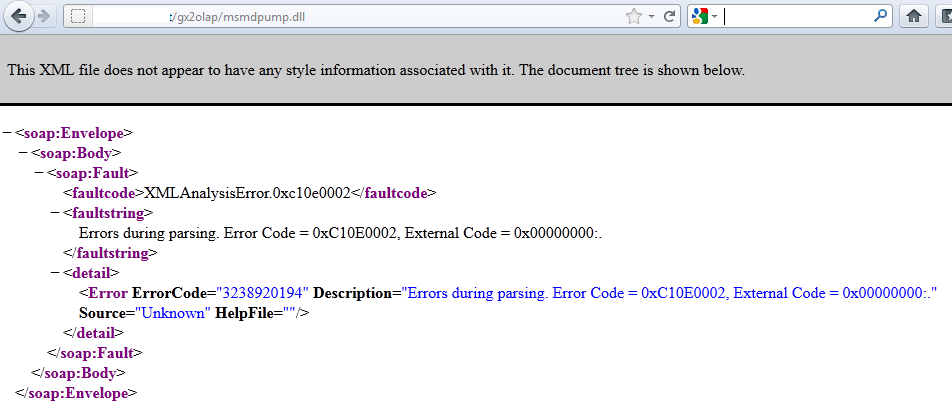

Cority communicates with the Analysis Service through IIS HTTP OLAP pump. Please refer to the following guide for the Microsoft portion of the OLAP pump setup:
IIS 7.0/7.5 Windows 7 Windows Server 2008 Windows Server 2008 R2 | http://msdn.microsoft.com/en-us/library/gg492140.aspx |
Depending on your security configuration, your domain account might need to be granted specific policies. For example, if your organization is using Windows authentication for SSAS and SSAS is configured on a server other than the one that is hosting the OLAP pump on IIS (web server), then ideally the domain account is able to communicate with both SSAS and the web server; for that domain account to be able to trigger certain calls while running the OLAP application pool, it will need to be granted ‘Log on as a batch job’ from the Local Security Policy manager or be part of a group that has that policy granted.
After completing the Microsoft portion of the OLAP pump setup, proceed with the following steps:

To make sure that the HTTP pump is set up correctly, go to a browser without security-enhancement (not IE in Windows Servers) and try accessing the URL for the msmdpump.dll. You should not see “Page not found” or an internal error. If you see an XML message similar to the following, you have successfully set up the HTTP pump.
